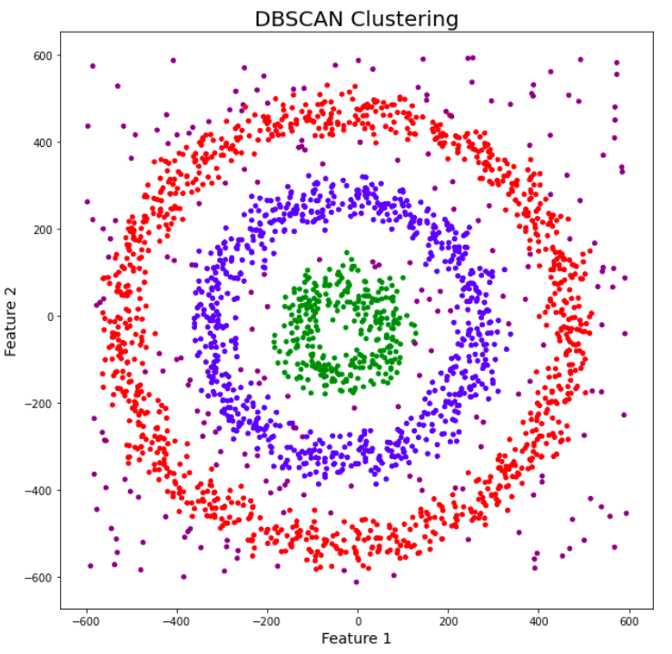
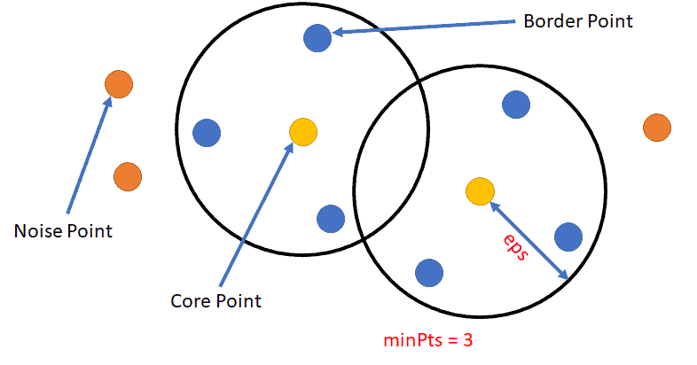
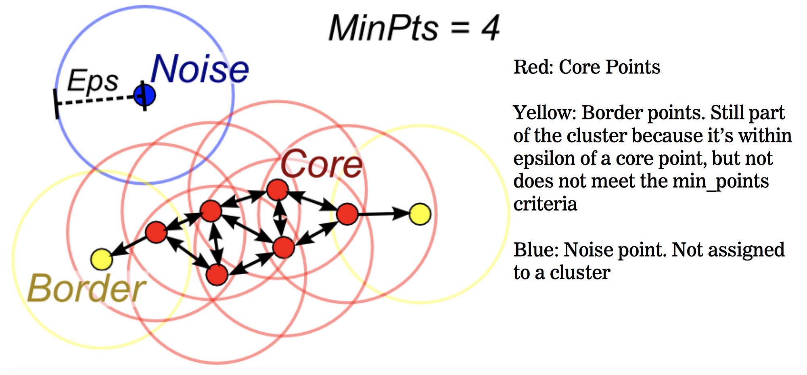
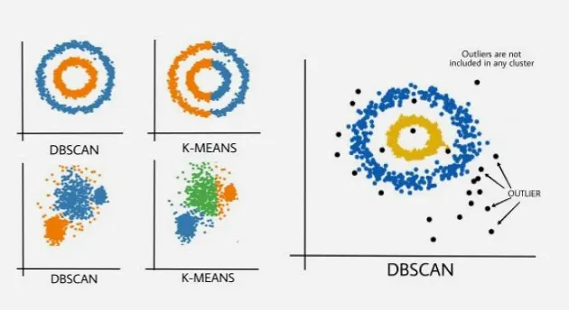
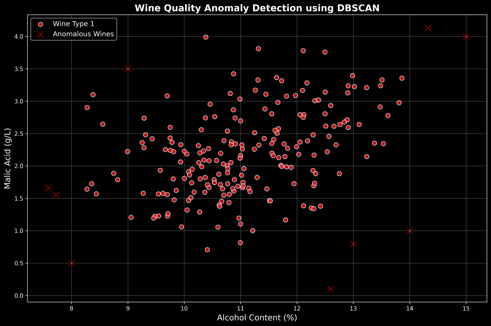
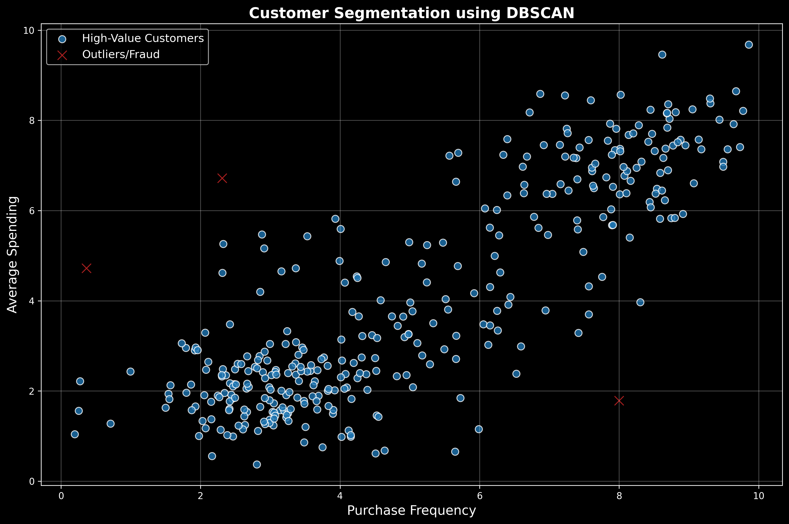
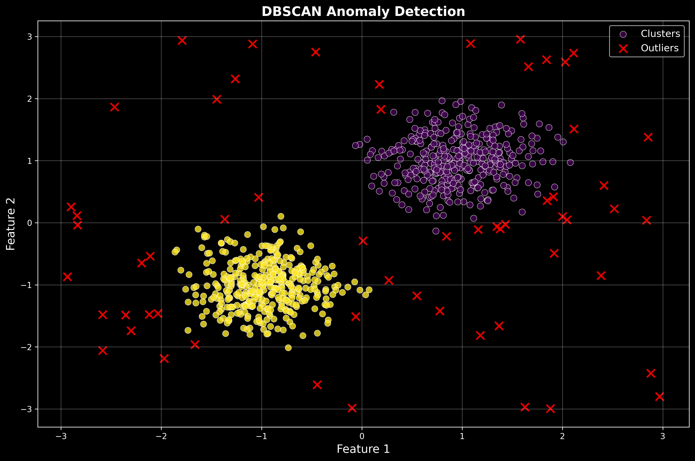

Introduction to DBSCAN
Density-Based Spatial Clustering of Applications with Noise
What is DBSCAN?
- DBSCAN (Density-Based Spatial Clustering of Applications with Noise)
- Groups together points that are closely packed
- Marks points in low-density regions as outliers
- Does not require pre-specifying the number of clusters
- Can find arbitrarily shaped clusters
Key Concepts
Core Points
Points with at least min_samples neighbors within
distance ε
Border Points
Non-core points within ε distance of a core point
Noise Points
Points that are neither core nor border points
DBSCAN Parameters & Intuition
Understanding ε and min_samples
The Two Key Parameters
ε (Epsilon)
- Maximum distance between two samples
- Defines the "neighborhood" radius
- Too small: many small clusters or noise
- Too large: all points in one cluster
min_samples
- Minimum points required to form a dense region
- Higher values = more robust to noise
- Lower values = more sensitive clusters
- Generally: min_samples = 2 × dimensions
Live Demo: Parameter Intuition
ε (Epsilon)
Defines the neighborhood radius.
Value: 1.0
min_samples
Minimum points in a neighborhood.
Value: 3
Parameter Sensitivity Analysis

Darker regions indicate better clustering quality (higher silhouette scores)
Alternative Density-Based Methods
OPTICS and HDBSCAN

OPTICS Algorithm
- Ordering Points To Identify Clustering Structure
- Creates a reachability plot instead of direct clustering
- Can extract clusters at different density levels
- More flexible than DBSCAN for varying densities
- Requires additional step to extract clusters

HDBSCAN Algorithm
- Hierarchical DBSCAN
- Extends DBSCAN to varying densities
- Builds a hierarchy of clusters
- Automatically extracts stable clusters
- More robust parameter selection
- Can handle clusters of different densities
from hdbscan import HDBSCAN
clusterer = HDBSCAN(min_cluster_size=10)
cluster_labels = clusterer.fit_predict(data)
Relative Merits Comparison
DBSCAN vs OPTICS vs HDBSCAN

Performance Comparison

Clustering quality comparison across different datasets
Strengths and Weaknesses
| Algorithm | Strengths | Weaknesses |
|---|---|---|
| DBSCAN | Simple, fast, handles noise well | Sensitive to parameters, struggles with varying densities |
| OPTICS | Handles varying densities, produces reachability plot | Requires additional clustering step, more complex |
| HDBSCAN | Robust to parameters, hierarchical structure | More computationally expensive, complex interpretation |
Clustering Tendency Assessment
Determining if clusters exist in data
Hopkins Statistic
- Tests the spatial randomness of data
- Values close to 0.5 indicate random data
- Values significantly different from 0.5 suggest clustering tendency
- H < 0.5: Regular/uniform data
- H > 0.5: Clustered data
from sklearn.neighbors import NearestNeighbors
import numpy as np
def hopkins_statistic(X, sample_size=None):
if sample_size is None:
sample_size = int(0.1 * len(X))
# Sample random points and compute distances
random_points = np.random.uniform(X.min(axis=0), X.max(axis=0),
(sample_size, X.shape[1]))
# Compute nearest neighbor distances
nbrs = NearestNeighbors(n_neighbors=1).fit(X)
distances = nbrs.kneighbors(random_points)[0]
return np.sum(distances) / (np.sum(distances) + np.sum(sample_distances))
Visual Assessment Techniques
VAT (Visual Assessment of Tendency)
- Reorders dissimilarity matrix
- Dark blocks indicate clusters
- Visual inspection of structure
Cluster Validation Plot

Quality Metrics Analysis
Evaluating clustering performance
Internal Validation Metrics
- Silhouette Score: Measures how similar points are to their own cluster vs other clusters
- Davies-Bouldin Index: Lower values indicate better clustering
- Calinski-Harabasz Index: Higher values indicate better defined clusters
- Dunn Index: Ratio of minimum inter-cluster to maximum intra-cluster distance
Silhouette Score Formula:
s(i) = (b(i) - a(i)) / max(a(i), b(i))
Where a(i) = avg distance to same cluster, b(i) = avg distance to nearest cluster
DBSCAN Quality Assessment

Multi-dimensional view of DBSCAN performance across various metrics
DBSCAN in Action: Case Studies and Code Examples
This presentation explores the practical applications of the Density-Based Spatial Clustering of Applications with Noise (DBSCAN) algorithm. We will delve into real-world case studies showcasing its effectiveness in various domains and provide hands-on code examples with visualizations to solidify your understanding.
Case Studies: Uncovering Patterns in Diverse Datasets
DBSCAN's ability to find arbitrarily shaped clusters and identify noise makes it a valuable tool in many fields:
1. Anomaly Detection in Scientific Data
Scenario: Identifying unusual data points in scientific datasets.
Application: Wine quality analysis, temperature anomaly detection.
2. Customer Segmentation in Retail
Scenario: Understanding customer base for targeted marketing.
Application: Organic customer segments without predefined groups.
3. Fraud Detection in Financial Transactions
Scenario: Identifying fraudulent financial activities.
Application: Isolating fraudulent transactions as noise points.
Code Examples: Implementing DBSCAN with Python
DBSCAN can be easily implemented using Python's scikit-learn library. Here are examples with visualizations to illustrate the core concepts.
1. Basic DBSCAN Clustering
import numpy as np
import matplotlib.pyplot as plt
from sklearn.cluster import DBSCAN
from sklearn.datasets import make_moons
# Generate sample data
X, _ = make_moons(n_samples=200, noise=0.05, random_state=42)
# Perform DBSCAN clustering
dbscan = DBSCAN(eps=0.3, min_samples=5)
clusters = dbscan.fit_predict(X)
# Visualize the results
plt.figure(figsize=(10, 6))
scatter = plt.scatter(X[:, 0], X[:, 1], c=clusters, cmap='viridis')
plt.title("DBSCAN Clustering of Moons Dataset")
plt.xlabel("Feature 1")
plt.ylabel("Feature 2")
plt.legend(handles=scatter.legend_elements()[0],
labels=['Cluster 1', 'Cluster 2', 'Noise'])
plt.savefig('dbscan_moons_clustering.png')
plt.show()
Result: DBSCAN successfully identifies two non-linear clusters in the moons dataset, demonstrating its ability to find arbitrarily shaped clusters.
2. Anomaly Detection with DBSCAN
This example shows how DBSCAN can be used to identify outliers in a dataset.
import numpy as np
import matplotlib.pyplot as plt
from sklearn.cluster import DBSCAN
from sklearn.datasets import make_blobs
# Generate sample data with outliers
centers = [[1, 1], [-1, -1]]
X, _ = make_blobs(n_samples=750, centers=centers,
cluster_std=0.4, random_state=0)
outliers = np.random.uniform(low=-3, high=3, size=(50, 2))
X = np.vstack([X, outliers])
# Perform DBSCAN clustering
dbscan = DBSCAN(eps=0.3, min_samples=10)
clusters = dbscan.fit_predict(X)
# Visualize the results
plt.figure(figsize=(10, 6))
# Plot non-outlier points
plt.scatter(X[clusters != -1, 0], X[clusters != -1, 1],
c=clusters[clusters != -1], cmap='viridis', label='Clusters')
# Plot outlier points
plt.scatter(X[clusters == -1, 0], X[clusters == -1, 1],
c='red', marker='x', label='Outliers')
plt.title("DBSCAN Anomaly Detection")
plt.xlabel("Feature 1")
plt.ylabel("Feature 2")
plt.legend()
plt.savefig('dbscan_anomaly_detection.png')
plt.show()
# Print results
n_clusters_ = len(set(clusters)) - (1 if -1 in clusters else 0)
n_noise_ = list(clusters).count(-1)
print(f'Estimated number of clusters: {n_clusters_}')
print(f'Estimated number of noise points: {n_noise_}')
Result: Dense clusters represent normal data patterns while outliers (red X's) are flagged as noise points, useful for fraud detection and quality control.
Key Insights from Code Examples
Moons Dataset Clustering
- Demonstrates DBSCAN's ability to find non-spherical clusters
- The eps parameter controls neighborhood radius
- min_samples determines core point threshold
- Successfully separates two interleaving half-circles
Anomaly Detection Results
- Dense clusters represent normal data patterns
- Outliers are flagged as noise points (labeled -1)
- Red 'x' markers clearly identify anomalous data
- Useful for fraud detection and quality control
Real-world Applications Summary
Scientific Research
Wine quality analysis, temperature anomaly detection
Business Intelligence
Customer segmentation, market analysis
Security & Finance
Fraud detection, transaction monitoring
Data Quality
Outlier identification, data validation
Visual Comparisons & Summary
Algorithm Performance
- HDBSCAN performs best for varying densities
- DBSCAN optimal for uniform density clusters
- OPTICS provides flexibility but requires more interpretation
Key Insights
- Parameter selection is crucial for DBSCAN success
- Hopkins statistic helps assess clustering tendency
- Multiple metrics needed for comprehensive evaluation
- Visual validation complements quantitative metrics
Best Practices
- Always assess clustering tendency before applying algorithms
- Use multiple validation metrics for robust evaluation
- Consider data preprocessing and scaling
- Visualize results when possible
- Compare multiple algorithms on your specific dataset
Conclusions & Key Takeaways
DBSCAN in the Clustering Landscape
🎯 Key Conclusions
Algorithm Strengths
Discovers Hidden Patterns: Identifies arbitrarily shaped clusters without predefined cluster count
Robust to Noise: Automatically identifies and isolates outliers as noise points
Computational Efficiency: O(n log n) complexity with proper indexing makes it scalable
Critical Success Factors
Parameter Tuning: Epsilon (ε) and min_samples require careful selection using domain knowledge
Data Preparation: Feature scaling and dimensionality considerations significantly impact performance
Validation Strategy: Multiple metrics (Silhouette, Davies-Bouldin) provide comprehensive evaluation
🔬 Research Insights Summary
Comparative Performance
Best for uniform density, interpretable parameters, real-time applications
Superior for varying densities, automatic parameter selection, complex datasets
Optimal for exploratory analysis, hierarchical structures, density visualization
Quality Assessment Framework
Internal Validation
Silhouette Score (0.3-0.7 indicates good clustering), Davies-Bouldin Index (<1.0 preferred)
Clustering Tendency
Hopkins Statistic (H > 0.75 suggests strong clustering tendency)
Visual Validation
Essential for parameter tuning and result interpretation
❓ Questions & Answers
Q: How do I choose the optimal ε (epsilon) value?
A: Use the k-distance graph method:
- Plot k-nearest neighbor distances in ascending order
- Look for the "elbow" or sharp bend in the curve
- The y-coordinate of this point suggests optimal ε
- Cross-validate with domain knowledge and clustering metrics
Q: What's the difference between noise and outliers in DBSCAN?
A: In DBSCAN context, they're synonymous:
- Noise points: Points that don't belong to any cluster (labeled as -1)
- These represent genuine outliers or anomalies in the data
- Can be valuable for anomaly detection applications
- Not necessarily "bad" data - often the most interesting findings
Q: When should I choose HDBSCAN over DBSCAN?
A: Consider HDBSCAN when:
- Clusters have significantly different densities
- You want more robust parameter selection
- Hierarchical cluster structure is valuable
- Dataset is complex with nested or varying-density clusters
- Computational cost is less critical than quality
Q: How does DBSCAN handle high-dimensional data?
A: High dimensions pose challenges:
- Curse of dimensionality: Distance metrics become less meaningful
- Solution: Apply dimensionality reduction (PCA, t-SNE, UMAP) first
- Consider feature selection to retain most relevant dimensions
- Use domain expertise to identify important features
- Alternative: Use specialized high-dimensional clustering methods
🚀 Future Directions & Final Thoughts
Emerging Trends
- GPU Acceleration: RAPIDS cuML for massive datasets
- Streaming DBSCAN: Real-time clustering for dynamic data
- Deep Learning Integration: Learned distance metrics and embeddings
- Federated Clustering: Privacy-preserving distributed DBSCAN
Best Practices Recap
Before Clustering
✓ Assess clustering tendency
✓ Preprocess and scale data
✓ Understand domain context
During Implementation
✓ Use systematic parameter selection
✓ Apply multiple validation metrics
✓ Visualize intermediate results
After Analysis
✓ Validate with domain experts
✓ Test stability across parameters
✓ Document assumptions and limitations
Thank You!
Questions & Discussion
Group Members: Atharv Sathe • Ayush Pandey • Harsh Markandey • Meet Bhikani • Manvendra Pratap Singh